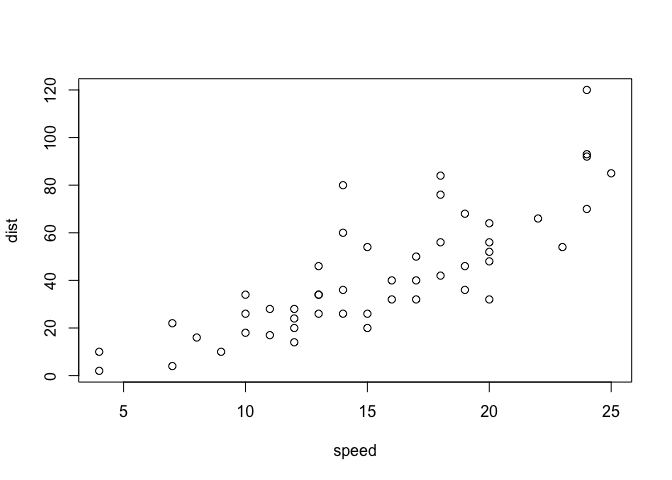

This is an R Markdown document. Markdown is a simple formatting syntax for authoring HTML, PDF, and MS Word documents. Click the Help toolbar button for more details on using R Markdown.
When you click the Knit button a document will be generated that includes both content as well as the output of any embedded R code chunks within the document. You can embed an R code chunk like this:
summary(cars)## speed dist
## Min. : 4.0 Min. : 2
## 1st Qu.:12.0 1st Qu.: 26
## Median :15.0 Median : 36
## Mean :15.4 Mean : 43
## 3rd Qu.:19.0 3rd Qu.: 56
## Max. :25.0 Max. :120You can also embed plots, for example:

Note that the echo = FALSE parameter was added to the code chunk to prevent printing of the R code that generated the plot.